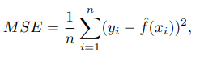
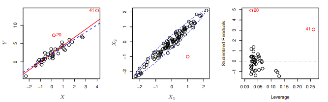
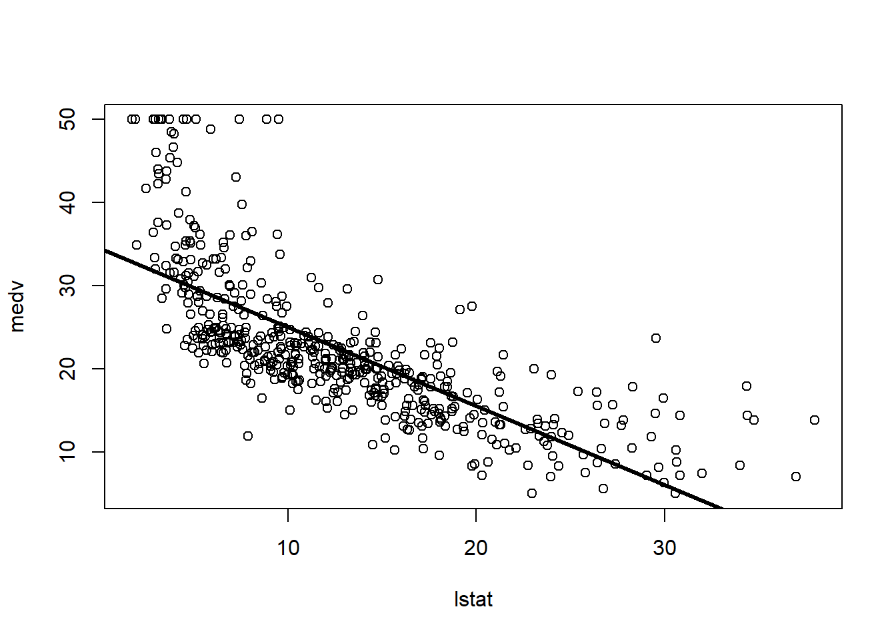
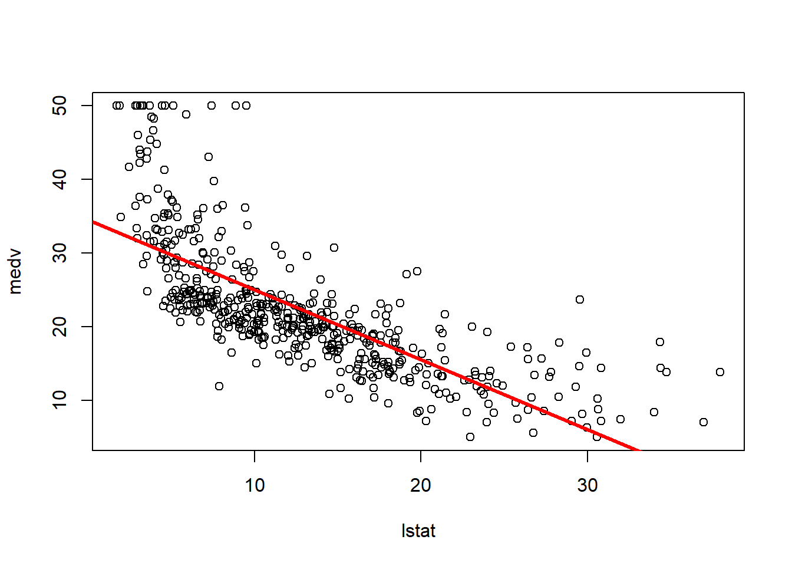
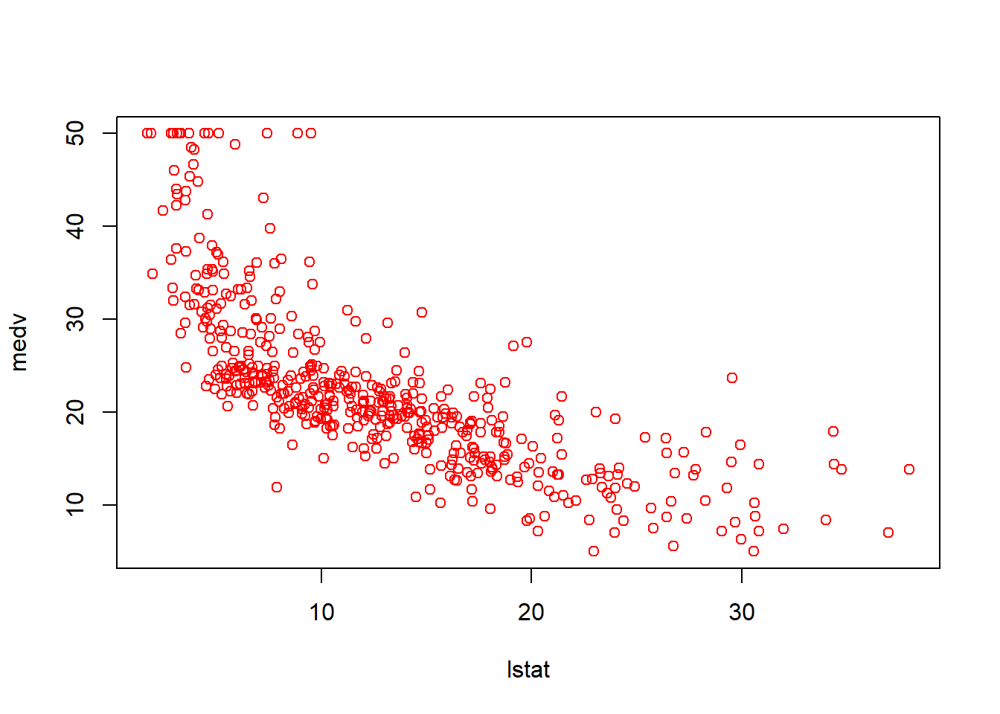
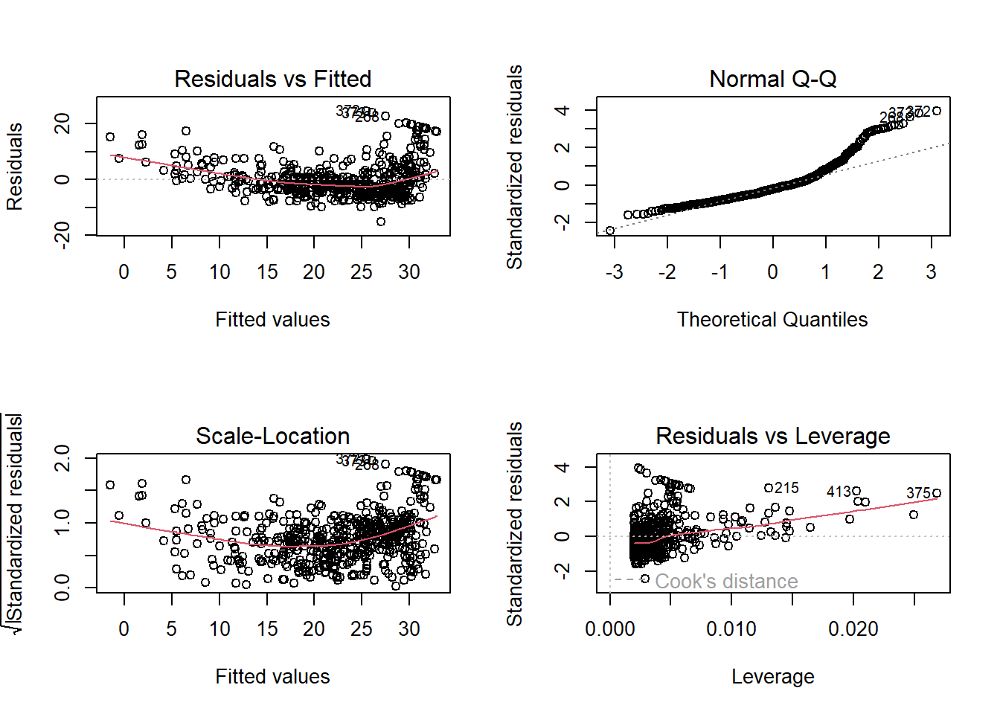
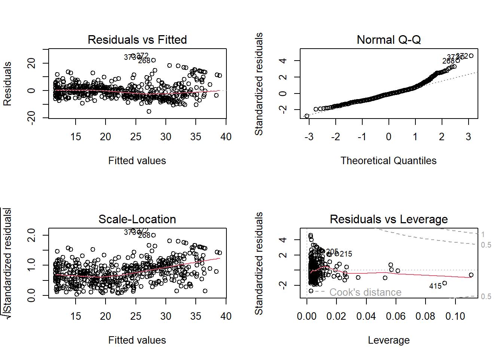

library(MASS)
library(ISLR2)
Attaching package: 'ISLR2'The following object is masked from 'package:MASS':
BostonEn general, la relación de los valores de entrada y salida se puede escribir de la sifuiente forma:
\[ Y = f(X) + ∊ \]
Esto se centra en la estimación de f desde varios enfoques. Existen 2 razones principales para estimar f:
En este punto es necesario entender que un conjunto de entradas (x) está facilmente disponible mientras que las salidas (y) no son faciles de obtener ya que existe la posibilidad del error, si tomamos que el término de error es un promedio 0 pordemos predecir siguiendo la fórmula:
\[ Y' = f'(X) \]
f’ : estimación para f.
Y’: predicción resultante para Y.
Por lo general, dentro de esta fórmula la forma de f’ no es tomada en cuenta siempre que produzca las predicciones precisas para Y.
La precisión de Y’ depende de 2 errores el reducible y el irreducible.
Dentro de la inferencia es necesario tomar en cuenta que nos interesa saber la forma exacta de f’. Esto se debe a que nos interesa conocer la asociación entre cada variable y probabilidad a diferencia de la predicción que se interesa más en la precisión del resultado.
Una forma de estimar f es aplicar el método de aprendizaje estadístico a los datos de entrenamiento, estos métodos se pueden caracterizar como paramétricos y no paramétricos:
Paramétricos: se basa en modelos de 2 pasos, hacer la suposición de la forma funcional y utilizar el procedimeinto que use los datos de entrenamiento para ajustar el modelo. Este enfoque reduce el problema de estimar f a estimar un conjunto de parámetros.
nota: Una desventaja de este enfoque es que el modelo por lo general no coincide con la verdadera forma de f.
No paramétricos: No se hace supociones de la forma funcional de f, se busca una estimación de f que se acerque lo mejor posible a los puntos de datos sin ser demasiado ondulado. Evita la posibilidad que el modelo no se ajuste a los datos.
nota: Una desventaja es que se requiere un gran numero de observaciones para obtener la estimación precisas de f.
La flexibilidad de un modelo se puede establecer en base de cuantas formas para estimar f puede producir, un ejemplo de modelo inflexible puede ser la regresión lineal debido a que solo genera funciones lineales.
Por otro lado existen otros metodos como plate splines son considerados flexibles ya que puede generar más posibilidades de estimar f.
La selección del modelo se basa en lo que se busca responder, por ejemplo si se desea obtener la inferencia un modelo más restrictivo es más interpetable.
En el aprendizaje estadístico se tiene dos categorías: supervisado o no supervisado.
En el aprendizaje supervisado cada observación de las medidas predictoras tiene una medida de respuesta asociada. Se desea ajustar un modelo que relacione la respuesta con los predictores, con el objetivo de tener una mejor precisión en la respuesta para futuras observaciones (predicción) o comprender mejor la relación entre la respuesta y los predictores (inferencia).
Por su parte el aprendizaje no supervisado describe una situación donde para cada observación se tiene un vector de medidas pero ninguna respuesta asociada, por lo cual no es posible ajustar un modelo de regresión lineal, ya que no hay una variable de respuesta que predecir.
Problemas de regresión: Problemas con respuestas cuantitativas (valores numéricos).
Problemas de clasificación: Problemas con una respuesta cualitativa (categóricas).
Sin embargo hay que tomar en cuenta ciertos casos como:
La regresión lineal de mínimos cuadrados tiene una respuesta cuantitativa mientras que la regresión logística usa una respuesta cualitativa.
Debido a la naturaleza de los diferentes tipos de datos es necesario elegir que método produce el mejor resultado, esta puede ser una de las partes más desafiantes.
Al evaluar el rendimiento de un método de aprendizaje estadístico es necesario cuantificar hasta que punto el valor de respuesta pronosticado para una observación se acerca al valor real de esa observación. Dentro de la regresión se utiliza el error cuadrático medio (MSE):

El MSE se calcula utilizando los datos de entrenamiento que se usaron al ajustar el modelo.
Es un método de aprendizaje supervisado, se puede lograr predecir una respuesta cuantitativa, esto, con el objetivo de poder procesar dos o más grupos de datos y encontrar una relación entre ellos.
Así también, la regresión lineal se convierte en una herramienta útil al tener datos con una tendencia lineal de relación logrando cuantificar su relación de interacción.
Es aplicada para predecir una respuesta cuantitativa Y a partir de una variable predictiva única X, esto suponiendo que existe una relación casi lineal entre X y Y. Esto se puede representar en una ecuación como:
\[Y ≈ 𝛽0 + 𝛽1X + ∊\]
La ecuación se representaría como: “Regresión de Y sobre X”, en donde 𝛽0+𝛽1 son parámetros desconocidos que representan la intersección y la pendiente de los parámetros. Una vez utilizados datos de entrenamiento para estimar 𝛽0+𝛽1 se podrá realiza una predicción de datos futuros.
El objetivo principal es obtener valores pertenecientes a cada uno de los coeficientes, tal que, se logre obtener o describir un modelo lineal, esto se logra mediante la representación de “pares de observaciones” en las cuales se obtengan una medida de X y una medida de Y, eso con el objetivo de tener estimaciones para los coeficientes 𝛽0, 𝛽1 tal que el modelo se ajuste a los datos disponibles hasta encontrar una intersección 𝛽0 y una pendiente 𝛽1, esto se lo puede lograr con el criterio de mínimos cuadrados. Se muestra un ejemplo de la relación lineal entre las ventas de una empresa y los gastos de publicidad en TV.

Es importante considerar el nivel de error en la aproximación, el cual determina la posible variación en el eje Y que hace que los datos no tengan un carácter lineal. Esto define la línea de regresión de la población. Aplicando la estrategia de mínimos cuadrados podemos obtener una nueva línea basada en los datos observados.

En la figura de la derecha se observa en color rojo la línea real de aproximación, mientras en color negro la línea de mínimos cuadrados en base a las observaciones, mientras que en la derecha se observan líneas basadas en mínimos cuadrados calculadas mediante observaciones aleatorias, estas estimaciones no se alejan demasiado de la regresión lineal de la población (línea roja).
Como conclusión la regresión lineal simple es un enfoque útil para predecir una respuesta sobre la base de una única variable predictora.
A diferencia de la regresión lineal simple, en la realidad existe más de un predictor, por ello, en vez de realizar varias regresiones lineales simples en donde se sesgan varios datos se debe realizar una regresión lineal múltiple. Esto se puede representar en una ecuación como:
\[ Y ≈ 𝛽_0 + 𝛽_1X_1 + 𝛽_2X_2+...+ 𝛽_pX_p + ∊ \]
En donde X1, X2 … Xp con índices predictores.
Al igual que en la regresión lineal simple los coeficientes 𝛽0, 𝛽1 … 𝛽p son los que deben estimarse y en base a estas estimaciones se pueden llagar a hacer predicciones. Para esta estimación se utiliza el mismo enfoque de mínimos cuadrados.
Para representar las estimaciones de coeficientes de regresión lineal múltiple se lo debe hacer mediante algebra matricial por medio de un paquete estadístico.
Es necesario responder ciertas preguntas al realizar regresión lineal múltiple:
¿Existe alguna relación entre la respuesta y los predictores?
En este caso se debe plantear una hipótesis nula en donde 𝛽0, 𝛽1 … 𝛽p = 0 y una hipótesis alternativa, en donde 𝛽0, 𝛽1 … 𝛽p ≠ 0 , aplicando la fórmula podemos obtener un falor de F en el cual se determina un valor cercano a 1 cuando no hay relación entre la pregunta y la respuesta, mientras que si existiera relación el valor sería superior a 1.
Decidir sobre variables importantes
Al determinar que los predictores si tienen una relación con las peguntas es necesario determinar cuales de ellos establecen esta relación. Para ello, es necesario realizar una selección de variables aplicando el método de Criterio de Información de Akaike u otro a conveniencia. Estos establecen 3 enfoques clásicos:
Selección hacia adelante: Implica iniciar con un modelo nulo, se ajustan regresiones lineales simples y se selecciona la variable con carácter mas bajo continuando con el ejercicio hasta cumplir con la regla de detención.
Selección hacia atrás: Se inicia con todas las variables, eliminando la variable con carácter mas alto, es decir, la menos significativa estadísticamente.
Selección mixta: es una combinación de selección hacia adelante y hacia atrás

Se observa una grafica de los datos obtenidos, en donde existen 2 predictores y una sola respuesta, esto en un plano 3D.
Al ajustar un modelo a una regresión lineal pueden ocurrir varios problemas, entre los cuales están:
No linealidad de las relaciones respuesta-predictor: Esto conlleva a que todas las conclusiones sean cuestionables y la precisión de predicción se reducen significativamente, esto se lo puede evitar aplicando los ” gráficos de residuos”
Valores atípicos: Estos valores surgen entre una de sus razones por el registro incorrecto de una observación durante la recopilación de datos, así mismo se pueden utilizar ” gráficos de residuos” para determinar el valor atípico y retíralo, esto mejorará la ecuación de linealidad obtenida.
Puntos de apalancamiento: son observaciones que se encuentran fuera del conglomerado de datos, esto produce que la ecuación de linealidad tienda a flexionarse de acuerdo al nivel de apalancamiento de la observación, mientras mas alejada este la observación del conjunto de observaciones mayor grado de apalancamiento habrá.

Como se observa en la figura de la izquierda, la observación 41 presenta un mayor grado de apalancamiento con respecto a la observación 20, así mismo, en la figura central se evidencia una observación inusual fuera del grupo de datos, esto produce un alto apalancamiento; mientras que en la figura de la derecha se observa un punto 41 con un grado muy alto de apalancamiento.
Usamos la función Library() para cargar librerías, funciones o datasets que no estén incluidos en R, en este caso incluiremos las librerías: MASS, que contiene una gran colección de datasets y funciones, por otro lado, necesitaremos la librería ISLR2 que incluye datasets relacionados al libro guía.
library(MASS)
library(ISLR2)
Attaching package: 'ISLR2'The following object is masked from 'package:MASS':
BostonUno de los datasets es Boston que registra “medv” que es el valor medio de la casa, para 506 distritos de Boston; en este laboratorio se tratará de predecir medv usando parámetros como rm (número de promedio de habitaciones), age (edad de la casa), lstat (Porcentaje de hogares con bajo status económico).
head (Boston) crim zn indus chas nox rm age dis rad tax ptratio lstat medv
1 0.00632 18 2.31 0 0.538 6.575 65.2 4.0900 1 296 15.3 4.98 24.0
2 0.02731 0 7.07 0 0.469 6.421 78.9 4.9671 2 242 17.8 9.14 21.6
3 0.02729 0 7.07 0 0.469 7.185 61.1 4.9671 2 242 17.8 4.03 34.7
4 0.03237 0 2.18 0 0.458 6.998 45.8 6.0622 3 222 18.7 2.94 33.4
5 0.06905 0 2.18 0 0.458 7.147 54.2 6.0622 3 222 18.7 5.33 36.2
6 0.02985 0 2.18 0 0.458 6.430 58.7 6.0622 3 222 18.7 5.21 28.7Utilizando la función lm(), ajustaremos un modelo de regresión lineal simple definiendo los siguientes parámetros: respuesta será medv, el predictor será Istat.
En una siguiente línea de código, adjuntamos el dataset Boston de tal manera que la función reconozca las variables.
lm.fit <- lm(medv ~ lstat , data = Boston)
attach (Boston)
lm.fit <- lm(medv ~ lstat)Para obtener más información sobre el modelo utilizado, podemos digitar “lm.fit” o “summary(lm.fit)” para obtener información más detallada sobre el modelo.
lm.fit
Call:
lm(formula = medv ~ lstat)
Coefficients:
(Intercept) lstat
34.55 -0.95 summary(lm.fit)
Call:
lm(formula = medv ~ lstat)
Residuals:
Min 1Q Median 3Q Max
-15.168 -3.990 -1.318 2.034 24.500
Coefficients:
Estimate Std. Error t value Pr(>|t|)
(Intercept) 34.55384 0.56263 61.41 <2e-16 ***
lstat -0.95005 0.03873 -24.53 <2e-16 ***
---
Signif. codes: 0 '***' 0.001 '**' 0.01 '*' 0.05 '.' 0.1 ' ' 1
Residual standard error: 6.216 on 504 degrees of freedom
Multiple R-squared: 0.5441, Adjusted R-squared: 0.5432
F-statistic: 601.6 on 1 and 504 DF, p-value: < 2.2e-16Así mismo, podemos llamar la función “names()” para encontrar que infromación se guardó en lm.fit.
names(lm.fit) [1] "coefficients" "residuals" "effects" "rank"
[5] "fitted.values" "assign" "qr" "df.residual"
[9] "xlevels" "call" "terms" "model" Por otro lado, podemos obtener el intervalo de confianza para la estimación de los coeficientes utilizando el comando “confint()”
confint(lm.fit) 2.5 % 97.5 %
(Intercept) 33.448457 35.6592247
lstat -1.026148 -0.8739505La función “predict”, puede ser utilizada para producir intervalos de confianza y de predicción para medv dado un valor de lstat.
predict (lm.fit , data.frame(lstat = (c(5, 10, 15))),
interval = "confidence") fit lwr upr
1 29.80359 29.00741 30.59978
2 25.05335 24.47413 25.63256
3 20.30310 19.73159 20.87461predict (lm.fit , data.frame(lstat = (c(5, 10, 15))),
interval = "prediction") fit lwr upr
1 29.80359 17.565675 42.04151
2 25.05335 12.827626 37.27907
3 20.30310 8.077742 32.52846Ahora trazaremos medv y lstat junto con una línea de regresión de mínimos cuadrados con las funciones plot() y abline().
plot(lstat, medv)
abline(lm.fit)
Ahora, la función “abline()” puede dibujar cualquier línea, incluso, podemos dibujar una con intersección y pendiente determinadas, solo necesitamos indicar estos parámetros en el argumento de la función, así mismo, podemos ser capaces de variar el ancho de la línea con el comando “lw=”, así mismo, podemos especificar el color que deseamos para nuestra línea en específico con el comando “col=”; por otro lado usamos “pch” para crear diferentes símbolos de trazado.
plot(lstat, medv)
abline (lm.fit , lwd = 3)
plot(lstat, medv)
abline (lm.fit , lwd = 3, col = " red ")
plot (lstat , medv , col = " red ")
plot (lstat , medv , pch = 20)
plot (lstat , medv , pch = "+")
plot (1:20, 1:20, pch = 1:20)
Mediante las funciones “par()” y “mfrow()” dividiremos la pantalla de visualización en paneles separados que permitan ver varios gráficos simultáneamente a elección, esto nos servirá para visualizar individualmente los diagramas de diagnóstico que se producen con la función “plot()” directamente de la salida de “lm()”.
par (mfrow = c(2, 2))
plot (lm.fit)
Así mismo, se puede calcular los residuos de un ajuste de regresión lineal usando la función “residuals()”; la función “rstudent()” devolverá los residuos estudentizados, y podemos usar esta función para graficar los residuos contra los valores ajustados.
plot ( predict (lm.fit), residuals (lm.fit))
plot ( predict (lm.fit), rstudent (lm.fit))
En las gráficas residuales, notamos que no existe linealidad; las estadísticas de leverage pueden ser calculadas para cualquier número de predictores mediante la función “hatvalues()”.
Así mismo, la función “which.max()” identifica el índice del elemento más grande de un vectos, en este caso nos dirá qué observación tiene la mayor estadística de leverage.
plot ( hatvalues (lm.fit))
which.max ( hatvalues (lm.fit))375
375 Ahora, para ajustar un modelo de regresión lineal simple, nuevamente usamosd”lim()“, pero con una sintaxis diferente, pues se utilizan 3 predictores; con la función”summary()” se generarán los coeficientes de regresión para todos los predictores.
lm.fit <- lm(medv ~ lstat + age , data = Boston)
summary (lm.fit)
Call:
lm(formula = medv ~ lstat + age, data = Boston)
Residuals:
Min 1Q Median 3Q Max
-15.981 -3.978 -1.283 1.968 23.158
Coefficients:
Estimate Std. Error t value Pr(>|t|)
(Intercept) 33.22276 0.73085 45.458 < 2e-16 ***
lstat -1.03207 0.04819 -21.416 < 2e-16 ***
age 0.03454 0.01223 2.826 0.00491 **
---
Signif. codes: 0 '***' 0.001 '**' 0.01 '*' 0.05 '.' 0.1 ' ' 1
Residual standard error: 6.173 on 503 degrees of freedom
Multiple R-squared: 0.5513, Adjusted R-squared: 0.5495
F-statistic: 309 on 2 and 503 DF, p-value: < 2.2e-16El conjunto de datos de Boston contiene 12 variables, para generar una regresión lineal con todos estos se puede utilizar la siguiente abreviatura:
lm.fit <- lm(medv ~ ., data = Boston)
summary (lm.fit)
Call:
lm(formula = medv ~ ., data = Boston)
Residuals:
Min 1Q Median 3Q Max
-15.1304 -2.7673 -0.5814 1.9414 26.2526
Coefficients:
Estimate Std. Error t value Pr(>|t|)
(Intercept) 41.617270 4.936039 8.431 3.79e-16 ***
crim -0.121389 0.033000 -3.678 0.000261 ***
zn 0.046963 0.013879 3.384 0.000772 ***
indus 0.013468 0.062145 0.217 0.828520
chas 2.839993 0.870007 3.264 0.001173 **
nox -18.758022 3.851355 -4.870 1.50e-06 ***
rm 3.658119 0.420246 8.705 < 2e-16 ***
age 0.003611 0.013329 0.271 0.786595
dis -1.490754 0.201623 -7.394 6.17e-13 ***
rad 0.289405 0.066908 4.325 1.84e-05 ***
tax -0.012682 0.003801 -3.337 0.000912 ***
ptratio -0.937533 0.132206 -7.091 4.63e-12 ***
lstat -0.552019 0.050659 -10.897 < 2e-16 ***
---
Signif. codes: 0 '***' 0.001 '**' 0.01 '*' 0.05 '.' 0.1 ' ' 1
Residual standard error: 4.798 on 493 degrees of freedom
Multiple R-squared: 0.7343, Adjusted R-squared: 0.7278
F-statistic: 113.5 on 12 and 493 DF, p-value: < 2.2e-16Podemos acceder a los componentes individuales de un objeto de la función “summary()” por su nombre, ingresando “?summary.lm” para ver qué hay disponible. Por lo tanto, summary(lm.fit)$r.sq nos da el R2 (Coeficiente de determinación), y summary(lm.fit)$sigma nos da el RSE (error estándar de la estimación).
La función vif() esparte del paquete “car”, la utilizamos para calcular los factores de inflación de la varianza. La mayoría de los “VIF” son de bajos a moderados para estos datos. El paquete “car” no forma parte de la instalación básica de R, por lo debemos descargar la primera vez que lo usemos con el siguiente comando a través de la función install.packages() en R.
#install.packages("car")library (car)Loading required package: carDatavif (lm.fit) crim zn indus chas nox rm age dis
1.767486 2.298459 3.987181 1.071168 4.369093 1.912532 3.088232 3.954037
rad tax ptratio lstat
7.445301 9.002158 1.797060 2.870777 Ahora, si queremos hacer una regresión con todas las variables, excepto una, por ejemplo en la regresión realizada en el bloque anterior tiene un valor p alto, pues, utlizamos la siguiente sintaxis:
lm.fit1 <- lm(medv ~ . - age , data = Boston)
summary (lm.fit1)
Call:
lm(formula = medv ~ . - age, data = Boston)
Residuals:
Min 1Q Median 3Q Max
-15.1851 -2.7330 -0.6116 1.8555 26.3838
Coefficients:
Estimate Std. Error t value Pr(>|t|)
(Intercept) 41.525128 4.919684 8.441 3.52e-16 ***
crim -0.121426 0.032969 -3.683 0.000256 ***
zn 0.046512 0.013766 3.379 0.000785 ***
indus 0.013451 0.062086 0.217 0.828577
chas 2.852773 0.867912 3.287 0.001085 **
nox -18.485070 3.713714 -4.978 8.91e-07 ***
rm 3.681070 0.411230 8.951 < 2e-16 ***
dis -1.506777 0.192570 -7.825 3.12e-14 ***
rad 0.287940 0.066627 4.322 1.87e-05 ***
tax -0.012653 0.003796 -3.333 0.000923 ***
ptratio -0.934649 0.131653 -7.099 4.39e-12 ***
lstat -0.547409 0.047669 -11.483 < 2e-16 ***
---
Signif. codes: 0 '***' 0.001 '**' 0.01 '*' 0.05 '.' 0.1 ' ' 1
Residual standard error: 4.794 on 494 degrees of freedom
Multiple R-squared: 0.7343, Adjusted R-squared: 0.7284
F-statistic: 124.1 on 11 and 494 DF, p-value: < 2.2e-16Para el mismo efecto, podemos utilizar la función “update()”:
lm.fit1 <- update (lm.fit , ~ . - age)Para un modelo lineal utilizando la función “lm()”, se pueden incluir términos de interacción entre lstat:black que le dice a R que incluya cierto término de interacción como predictores, en este caso, se volvió a incluir como predictor a la variable “age”:
summary (lm(medv ~ lstat * age , data = Boston))
Call:
lm(formula = medv ~ lstat * age, data = Boston)
Residuals:
Min 1Q Median 3Q Max
-15.806 -4.045 -1.333 2.085 27.552
Coefficients:
Estimate Std. Error t value Pr(>|t|)
(Intercept) 36.0885359 1.4698355 24.553 < 2e-16 ***
lstat -1.3921168 0.1674555 -8.313 8.78e-16 ***
age -0.0007209 0.0198792 -0.036 0.9711
lstat:age 0.0041560 0.0018518 2.244 0.0252 *
---
Signif. codes: 0 '***' 0.001 '**' 0.01 '*' 0.05 '.' 0.1 ' ' 1
Residual standard error: 6.149 on 502 degrees of freedom
Multiple R-squared: 0.5557, Adjusted R-squared: 0.5531
F-statistic: 209.3 on 3 and 502 DF, p-value: < 2.2e-16Otra función de “lm()” puede acomodar transformaciones no lineales de los predictores, por ejemplo, podemos crear un predictor X^2 con “I(X^2)”, esta función “I()” nos permite elevar X a la potencia 2, entonces, hacemos una regresión de medv en lstat y lstat2.
lm.fit2 <- lm(medv ~ lstat + I(lstat^2))
summary (lm.fit2)
Call:
lm(formula = medv ~ lstat + I(lstat^2))
Residuals:
Min 1Q Median 3Q Max
-15.2834 -3.8313 -0.5295 2.3095 25.4148
Coefficients:
Estimate Std. Error t value Pr(>|t|)
(Intercept) 42.862007 0.872084 49.15 <2e-16 ***
lstat -2.332821 0.123803 -18.84 <2e-16 ***
I(lstat^2) 0.043547 0.003745 11.63 <2e-16 ***
---
Signif. codes: 0 '***' 0.001 '**' 0.01 '*' 0.05 '.' 0.1 ' ' 1
Residual standard error: 5.524 on 503 degrees of freedom
Multiple R-squared: 0.6407, Adjusted R-squared: 0.6393
F-statistic: 448.5 on 2 and 503 DF, p-value: < 2.2e-16Un valor p cercano a cero asociado con el término cuadrático sugiere que se tiene un modelo mejorado. Usando la función “anova()” para cuantificar aún más la medida en que el ajuste cuadrático es superior al ajuste lineal.
lm.fit <- lm(medv ~ lstat)
anova (lm.fit , lm.fit2)Analysis of Variance Table
Model 1: medv ~ lstat
Model 2: medv ~ lstat + I(lstat^2)
Res.Df RSS Df Sum of Sq F Pr(>F)
1 504 19472
2 503 15347 1 4125.1 135.2 < 2.2e-16 ***
---
Signif. codes: 0 '***' 0.001 '**' 0.01 '*' 0.05 '.' 0.1 ' ' 1Aquí el modelo 1 representa el submodelo lineal que contiene un solo predictor que es lstat, por su parte Modelo 2 que corresponde a un modelo cuadrático más grande con dos predictores lstar y lstat2. La función “anova()” realiza una prueba de hipótesis comparando los dos modelos, la hipótesis nula es que ambos modelos ajustan datos correctamente y la hipótesis alternativa es que todo el modelo es superior. Aquí el estadístico F es 135 y el valor p asociado es prácticamente cero, evidenciando que el modelo que contiene ambos predictores, es muy superior al modelo que solo tiene un predictor, esto podemos relacionarlo con que, de acuerdo con lo que vimos la no linealidad en relación entre “medv” y “lstat”
par (mfrow = c(2, 2))
plot (lm.fit2)
Nos percatamos que cuando el término lstat2 se incluye en el modelo hay un patrón poco perceptible en los residuos. Para crear un ajuste cúbico se puede incluir un predictor de la forma “I(X^3)”, y podemos trabajarlo de esa manera para polinomios de orden superior, ahora, también podemos utilizar la función “poly()” para crear este polinomio dentro de “lm()”, en el siguiente bloque de código podemos ver su aplicación para incluir un polinomio de quinto grado.
lm.fit5 <- lm(medv ~ poly (lstat , 5))
summary (lm.fit5)
Call:
lm(formula = medv ~ poly(lstat, 5))
Residuals:
Min 1Q Median 3Q Max
-13.5433 -3.1039 -0.7052 2.0844 27.1153
Coefficients:
Estimate Std. Error t value Pr(>|t|)
(Intercept) 22.5328 0.2318 97.197 < 2e-16 ***
poly(lstat, 5)1 -152.4595 5.2148 -29.236 < 2e-16 ***
poly(lstat, 5)2 64.2272 5.2148 12.316 < 2e-16 ***
poly(lstat, 5)3 -27.0511 5.2148 -5.187 3.10e-07 ***
poly(lstat, 5)4 25.4517 5.2148 4.881 1.42e-06 ***
poly(lstat, 5)5 -19.2524 5.2148 -3.692 0.000247 ***
---
Signif. codes: 0 '***' 0.001 '**' 0.01 '*' 0.05 '.' 0.1 ' ' 1
Residual standard error: 5.215 on 500 degrees of freedom
Multiple R-squared: 0.6817, Adjusted R-squared: 0.6785
F-statistic: 214.2 on 5 and 500 DF, p-value: < 2.2e-16Este análisis sugiere que incluir términos polinómicos adicionales, hasta el quinto orden, generan una mejora en el ajuste del modelo.
Por defecto, “poly()” ortogonaliza los predictores, esto significa que las características que genera esta función no son simplemente una secuencia de potencias del argumento. Sin embargo, un modelo lineal aplicado a la salida de la función “poly()” tendrá los mismos valores ajustados que un modelo lineal aplicado a los polinomios sin procesar, ahora, para conseguirlos se deberá usar el argumento “raw=TRUE”
summary (lm(medv ~ log(rm), data = Boston))
Call:
lm(formula = medv ~ log(rm), data = Boston)
Residuals:
Min 1Q Median 3Q Max
-19.487 -2.875 -0.104 2.837 39.816
Coefficients:
Estimate Std. Error t value Pr(>|t|)
(Intercept) -76.488 5.028 -15.21 <2e-16 ***
log(rm) 54.055 2.739 19.73 <2e-16 ***
---
Signif. codes: 0 '***' 0.001 '**' 0.01 '*' 0.05 '.' 0.1 ' ' 1
Residual standard error: 6.915 on 504 degrees of freedom
Multiple R-squared: 0.4358, Adjusted R-squared: 0.4347
F-statistic: 389.3 on 1 and 504 DF, p-value: < 2.2e-16En la librería ISLR2 existe un dataset de “Carseats”, a continuación se intenta predecir las ventas de asientos de seguridad para niños en 400 ubicaciones en función de una serie de predictores.
Los datos de “carseats” incluyen predictores como “Shelveloc”, un indicador de la calidad de la ubicación de las estanterías, tomando tres posibles valores: malo, medio y bueno.
Dada una variable cualitativa como Shelveloc, R genera automáticamente variables ficticias. A continuación ajustamos un modelo de regresión múltiple que incluye algunos términos de interacción.
head (Carseats) Sales CompPrice Income Advertising Population Price ShelveLoc Age Education
1 9.50 138 73 11 276 120 Bad 42 17
2 11.22 111 48 16 260 83 Good 65 10
3 10.06 113 35 10 269 80 Medium 59 12
4 7.40 117 100 4 466 97 Medium 55 14
5 4.15 141 64 3 340 128 Bad 38 13
6 10.81 124 113 13 501 72 Bad 78 16
Urban US
1 Yes Yes
2 Yes Yes
3 Yes Yes
4 Yes Yes
5 Yes No
6 No Yeslm.fit <- lm(Sales ~ . + Income:Advertising + Price:Age ,
data = Carseats)
summary (lm.fit)
Call:
lm(formula = Sales ~ . + Income:Advertising + Price:Age, data = Carseats)
Residuals:
Min 1Q Median 3Q Max
-2.9208 -0.7503 0.0177 0.6754 3.3413
Coefficients:
Estimate Std. Error t value Pr(>|t|)
(Intercept) 6.5755654 1.0087470 6.519 2.22e-10 ***
CompPrice 0.0929371 0.0041183 22.567 < 2e-16 ***
Income 0.0108940 0.0026044 4.183 3.57e-05 ***
Advertising 0.0702462 0.0226091 3.107 0.002030 **
Population 0.0001592 0.0003679 0.433 0.665330
Price -0.1008064 0.0074399 -13.549 < 2e-16 ***
ShelveLocGood 4.8486762 0.1528378 31.724 < 2e-16 ***
ShelveLocMedium 1.9532620 0.1257682 15.531 < 2e-16 ***
Age -0.0579466 0.0159506 -3.633 0.000318 ***
Education -0.0208525 0.0196131 -1.063 0.288361
UrbanYes 0.1401597 0.1124019 1.247 0.213171
USYes -0.1575571 0.1489234 -1.058 0.290729
Income:Advertising 0.0007510 0.0002784 2.698 0.007290 **
Price:Age 0.0001068 0.0001333 0.801 0.423812
---
Signif. codes: 0 '***' 0.001 '**' 0.01 '*' 0.05 '.' 0.1 ' ' 1
Residual standard error: 1.011 on 386 degrees of freedom
Multiple R-squared: 0.8761, Adjusted R-squared: 0.8719
F-statistic: 210 on 13 and 386 DF, p-value: < 2.2e-16La función “contrasts()” devuelve la codificación que usa R para la variable ficticia:
attach (Carseats)
contrasts (ShelveLoc) Good Medium
Bad 0 0
Good 1 0
Medium 0 1R ha creado una variable ficticia ShelveLocGood que toma el valor 1 si la ubicación de la estantería es buena y 0 en caso contrario. También ha creado una variable ficticia ShelveLocMedium que equivale a 1 si la ubicación de la estantería es mediana y 0 en caso contrario. Una ubicación de estantería incorrecta corresponde a un cero para cada una de las dos variables ficticias. El hecho de que el coeficiente de ShelveLocGood en el resultado de la regresión sea positivo indica que una buena ubicación de estanterías está asociada con altas ventas (en relación con una mala ubicación).
La función “LoadLibraries()” es una función en programación que se utiliza para cargar librerías o bibliotecas de código en un programa o aplicación, a continuación escribiremos una función simple que lea las bibliotecas ISLR2 y MASS:
LoadLibraries <- function (){
+ library (ISLR2)
+ library (MASS)
+ print ("The libraries have been loaded .")
}Ahora, si tipeamos “LoadLibraries”, R nos dirá qué hay dentro de una función. Y si llamamos a la función “LoadLibraries()” estaremos llamando a la función.
LoadLibrariesfunction (){
+ library (ISLR2)
+ library (MASS)
+ print ("The libraries have been loaded .")
}#LoadLibraries()